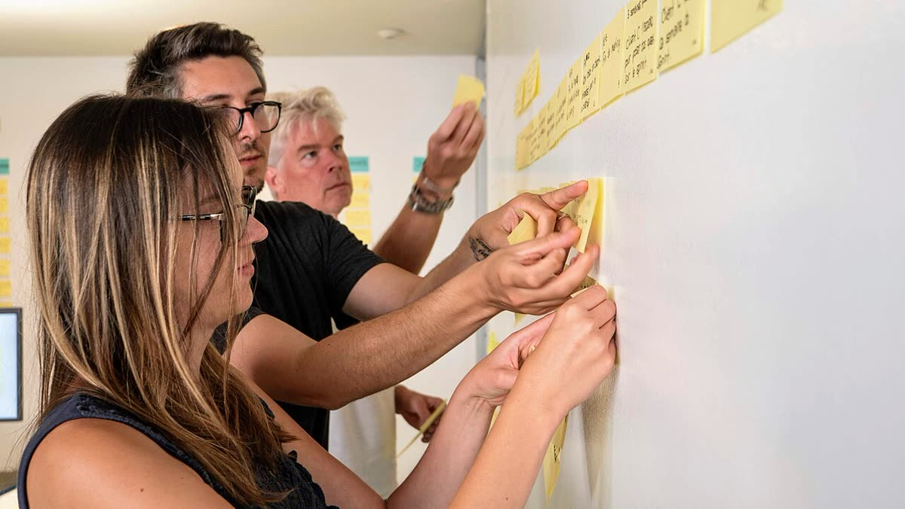

Shows a member’s profile photos as square thumbnails, up to 10. One is featured and becomes their picture everywhere on FaithTech, and every photo needs a description (alt text) before the profile saves. It lives in the Photos card of Edit profile.
Use the picture list wherever members manage their own photos. Today that is the Photos card on Edit profile: Grace Okonkwo has four photos, and the Builders Night one is featured, so it is her avatar on her profile, in People and in search.
The list uploads nothing itself. It shows the photos it is given, checks each chosen file’s type and size, and emits what the member asked for: add, remove (through the Delete photo confirmation), feature, or a changed description. Descriptions are saved with the profile.
JPEG, PNG or WebP up to 5 MB. Your featured photo is your picture everywhere on FaithTech.
Featured
Heading and count"Photos" with a neutral badge, "2 of 10".
Add photosA label.btn around a visually hidden input type="file" multiple.
HelpThe allowed types and size, and what featured means.
ThumbnailA square .picture-list__thumb. Its alt is the member’s own description.
Featured markA success badge, "Featured", and an accent ring.
RemoveAn icon button on the corner, named "Remove photo N". It opens the Delete photo dialog.
DescriptionA required small text field, "Photo N description".
FeatureA small ghost button in a .picture-list__actions row under every photo that is not featured. The featured photo has no actions row at all, not an empty one.
JPEG, PNG or WebP up to 5 MB. Your featured photo is your picture everywhere on FaithTech.
Featured

Empty
Photos 0 of 10
No photos yet. Add one so people recognise you at events. JPEG, PNG or WebP up to 5 MB.
Profiles and private contacts own photos; the two differ only in wording (below).
Contact subject (inside a create form)
subject="contact" is used on the add-contact form (pages/contact-form/photos, L2-067) and in the add contact photo dialog, before the contact or photo exists on the server. Every chosen photo is pending, so the list: says "The featured photo shows on their card. Only you can see these photos."; shows Feature on pending photos too (the featured one uploads first so the server features it); says "Not saved yet. It uploads when you save the contact."; reports a missing description as "Describe this photo." to match the server; and at 10 says "That’s 10 photos, the most a contact can have." The profile subject (default) is unchanged. In the add contact photo dialog, [featurable]="false" hides Feature (the server features a contact's first photo) and pendingNote says the photo uploads when Add photos is chosen.
JPEG, PNG or WebP up to 5 MB. Your featured photo is your picture everywhere on FaithTech.
Featured
Focus on Feature
Photos 2 of 10
JPEG, PNG or WebP up to 5 MB. Your featured photo is your picture everywhere on FaithTech.
Featured
Uploading
Photos 2 of 10
JPEG, PNG or WebP up to 5 MB. Your featured photo is your picture everywhere on FaithTech.
Featured
Uploading… 60%
Too large
Photos 2 of 10
JPEG, PNG or WebP up to 5 MB. Your featured photo is your picture everywhere on FaithTech.
Featured
team.jpg is 9.4 MB. Photos can be up to 5 MB — try a smaller one.
Wrong type
Photos 1 of 10
JPEG, PNG or WebP up to 5 MB. Your featured photo is your picture everywhere on FaithTech.
builders-night.heic isn’t a photo we can use. Photos must be JPEG, PNG or WebP.
Featured
Description missing
Photos 2 of 10
JPEG, PNG or WebP up to 5 MB. Your featured photo is your picture everywhere on FaithTech.
Featured
Describe what’s in the photo for people using screen readers.
Full (10 of 10)
Photos 10 of 10
That’s 10 photos, the most a profile can have. Remove one to add another.
Featured
Pending
Photos 1 of 10
JPEG, PNG or WebP up to 5 MB. Your featured photo is your picture everywhere on FaithTech.
Not saved yet. It uploads when you save your profile.
Storing
Photos 1 of 10
JPEG, PNG or WebP up to 5 MB. Your featured photo is your picture everywhere on FaithTech.
Featured
Saved. It shows on your profile once it finishes storing.
Uploading sets aria-busy on that photo’s item (the li that holds the thumbnail, progress bar and status line), spins over the thumbnail and shows the percentage in a polite status line. When the percentage is known, a progress bar named "Uploading photo N" sits above the status line; without one, the line reads "Uploading…" and there is no bar. The other photos stay usable.
Too large or wrong type is checked in the browser and again on the server. A file refused in the browser never becomes a thumbnail: a .picture-list__note--error under the help names the file and the rule. A photo the server refuses keeps its thumbnail with a danger border, and its note names the file and the limit.
Empty shows "0 of 10", Add photos and the help, which opens with "No photos yet. Add one so people recognise you at events." There is no grid.
Full disables Add photos at 10 and replaces the help with the limit note, which describes the button.
Description missing blocks Save profile, and the form summary links to the field ("Describe this photo").
Removing goes through the Delete photo dialog (default, busy, failed). Removing the featured photo features the most recently uploaded one left (L2-007 AC6).
Pending marks a chosen photo that is not saved yet: no Feature action, and the note "Not saved yet. It uploads when you save your profile." Removing it needs no confirmation because nothing is stored.
Storing marks a saved photo whose image is still being written because photo storage was down (L2-047): the thumbnail is a .picture-list__placeholder with role="img" and the description as its name, and a role="status" note says "Saved. It shows on your profile once it finishes storing." Feature and Remove still work. The server stores the image when storage recovers, and the next load shows it.
Saving leaves the list unchanged; Save profile carries the busy state.
A role="group" named "Photos", holding a list of thumbnails and a native file input inside a label, so "Add photos" is the input’s accessible name. Each thumbnail’s alt is the description the member typed. The description is required, so no photo reaches other members without alt text.
Keyboard
Key
Action
Tab
Add photos, then for each photo: Remove, description, Feature.
Enter / Space
Presses the focused button, or opens the file chooser.
Names and announcements
Buttons name their photo: "Remove photo 2", "Feature photo 2". "Featured" is badge text, so the state never rests on the ring colour alone.
Upload progress is read from a role="status" line. Errors are tied to the description field with aria-describedby.
After a photo is removed, focus returns to Add photos.
Touch
Every button meets the 44px target through its padding. On phones the file chooser offers the camera.
Heading "Photos" with "N of 10". Help: "JPEG, PNG or WebP up to 5 MB. Your featured photo is your picture everywhere on FaithTech."
Description label "Photo N description". Say what is in the photo ("Grace smiling, in a head-and-shoulders portrait"), not the file name.
Errors: "Describe what’s in the photo for people using screen readers.", "team.jpg is 9.4 MB. Photos can be up to 5 MB — try a smaller one." and "builders-night.heic isn’t a photo we can use. Photos must be JPEG, PNG or WebP."
Full: "That’s 10 photos, the most a profile can have. Remove one to add another."
Spinner over the dimmed thumbnail while it uploads; the busy item also holds the status line.
.picture-list__remove, __actions, __note
The corner Remove button, the Feature row and the caption note.
.picture-list__note--error
A list-level note in the danger colour, naming a chosen file that was refused before upload (wrong type or too large).
photos, max
The items. Add photos is disabled at max (10) and described by the limit note.
pending (per photo)
Not saved yet: hides Feature and adds the "Not saved yet" note.
storing (per photo)
Saved but still storing: url is null, so the thumbnail is a described placeholder, with the "Saved. It shows on your profile once it finishes storing." status note.
id (per photo)
Optional key that keeps each photo in place across changes; falls back to url.
altError (per photo), descriptionFieldId(i)
The page’s own description error (shown after a save attempt), and the id of a description field for the form’s error summary to link to.
picked, removed, featured, altChange
Emit the chosen files (after the type and size checks), or the photo’s index and new description.